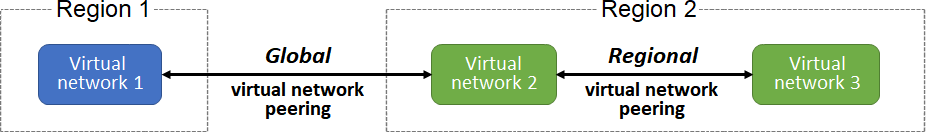

Perhaps the simplest and quickest way to connect your virtual networks is to use Azure Virtual Network peering. Virtual Network peering enables you to seamlessly connect two Azure virtual networks. After the networks are peered, the two virtual networks operate as a single network, for connectivity purposes.
Things to know about Azure Virtual Network peering
Let's examine some prominent characteristics of Azure Virtual Network peering.
-
There are two types of Azure Virtual Network peering: regional and global .

-
Regional virtual network peering connects Azure virtual networks that exist in the same region.
-
Global virtual network peering connects Azure virtual networks that exist in different regions.
-
You can create a regional peering of virtual networks in the same Azure public cloud region, or in the same China cloud region, or in the same Microsoft Azure Government cloud region.
-
You can create a global peering of virtual networks in any Azure public cloud region, or in any China cloud region.
-
Global peering of virtual networks in different Azure Government cloud regions isn't permitted.
-
After you create a peering between virtual networks, the individual virtual networks are still managed as separate resources.
-
Virtual networks can be peered across subscriptions and tenants.
Things to consider when using Azure Virtual Network peering
Consider the benefits of using Azure Virtual Network peering.
| Benefit | Description |
|---|---|
| Private network connections | When you implement Azure Virtual Network peering, network traffic between peered virtual networks is private. Traffic between the virtual networks is kept on the Microsoft Azure backbone network. No public internet, gateways, or encryption is required in the communication between the virtual networks. |
| Strong performance | Because Azure Virtual Network peering utilizes the Azure infrastructure, you gain a low-latency, high-bandwidth connection between resources in different virtual networks. |
| Simplified communication | Azure Virtual Network peering lets resources in one virtual network communicate with resources in a different virtual network, after the virtual networks are peered. |
| Seamless data transfer | You can create an Azure Virtual Network peering configuration to transfer data across Azure subscriptions, deployment models, and across Azure regions. |
| No resource disruptions | Azure Virtual Network peering doesn't require downtime for resources in either virtual network when creating the peering, or after the peering is created. |